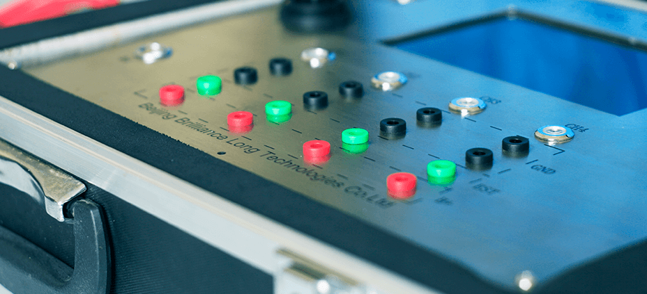

飞轮扭矩扭振测量系统可适用于乘用车、商用车的混合动力发动机、汽油发动机，柴油发动机，飞轮扭矩扭振测量传感器安装于发动机和变速器之间。并能精确测量从发动机输出到变速器的高频动态扭矩。该系统是采集飞轮扭矩（力矩）的理想选择，组件和传感器轻巧，对原有动力总成设计空间和工作状态无影响，并经过高密封设计，使传感器和组件能经受各种恶劣的环境，可根据客户的要求任意改装，并能重复使用。
飞轮扭振测试系统
扭振测量系统对车辆发动机或其它设备使用燃机系列的产品中对飞轮输出扭矩大小进行光学高速测量，便于内燃机扭矩在各个气缸冲程输出大小进行评估。采集飞轮的转速变化和曲轴位置，信号通过CAN总线输出，最大输出频率2KHz,输出频率可调。
飞轮扭振测试系统
扭矩测量系统是对车辆发动机或其它设备使用燃机系列的飞轮或轮毂输出扭矩大小进行光学高速测量，便于内燃机扭矩输出大小进行评估。飞轮扭矩测量系统传感器安装于发动机和变速器之间。
飞轮扭矩测量系统主要有盘式扭矩传感器、无线传输模块、感应电源三部分组成。
功能特点
点火线圈测试系统技术方案
点火线圈是点燃式内燃机的一个关键零部件，点火线圈的性能直接影响到发动机的燃烧效率，关系到发动机的整体性能表现。
点火线圈主要由初级绕组、次级绕组、磁芯等组成。
在点火系统中, 利用点火线圈将低压电转换为高压电, 在火花塞电极处击穿空气并产生火花放电。在点火线圈的使用过程中，常见的故障是绕组间被击穿漏电或者线圈蓄能不足，导致点火线圈高压不足，能量弱，甚至无火等故障，造成发动机工作异常。所以在点火线圈的选型检测分析和装车前的批量抽检变得尤为重要。
目前国内主要针对点火线圈的系统性能测试和实验的设备缺乏及不够完善，难以对点火线圈进行全面详尽的检测，从而无法对点火线圈的选型和产品性能全面详尽的检测分析。构建一套点火线圈检测系统对点火线圈进行全面的测试和检测，用于目前的GDI及涡轮增压发动机的选型和匹配显得尤为迫切和必须。
我公司与国际知名零部件企业在点火线圈的测试系统方面有过深度合作，并为该公司定制开发过多种测试核心模块，参与了该测试系统整合的全过程根据现有的合作经验，可为客户搭建出一套完整点火线圈测试系统，这套系统在国内具有技术上的领先优势，可完全满足客户需求对点火线圈做出详尽的性能分析评价。
点火线圈测试系统主要分为性能测试和可靠性测试两大部分，性能测试主要为了验证点火线圈是否能满足客户需求，检测点火线圈的各项性能指标。而可靠性试验则模拟在长时间的使用时，点火线圈的可靠性，以及在长时间使用时可能存在的缺陷。对两种测试所产生的问题可进行详细分析，找出问题的原因，以便于为点火线圈的选型决策做出技术参考，以及对点火线圈的可靠性提供指导意见，为产品的选型和质量把关。

点火测试系统
多年来，国内汽车行业的测试设备大部分还比较落后，产品质量始终难以得到有效提高。为了适应汽车工业快速发展的需要，必须大力改善和提高测试汽车产品质量的措施。点火线圈是汽车产品中的关键部分，直接影响汽车的动力性、经济性。由此需要功能全、精度高、可靠性好的先进自动测试设备，以保证良好的质量。
现有的点火测试系统功能单一、操作麻烦，并且需要结合PC机、示波器、外部电源等仪器才能完成工作。
本系统能够实现同时对四路点火线圈进行测量和监控，并且可以将其测量结果显示于7寸液晶屏；能够根据点火线圈的驱动方式来自动输出驱动信号，以方便用户不会因误操作而造成的线圈的损坏；能够对点火线圈进行耐久性测试，并实时监控点火线圈的工作状态。
Break Out Box
Break out box用于与发动机相关的测试或实验，通常设备串接在ECU与线束之间，供测试人员截取信号或人为进行故障的模拟，ECU信号转接箱可根据客户需求进行单独定制。本信号转接箱采用铝合金外壳轻便坚固。
失火发生器
随着汽车的大量生产和使用以及环保意识的不断加强，人们对汽车排放带来的环境污染问题越来越重视，各国相继出台了控制汽车尾气排放的法规，OBD-Ⅱ法规正是其中之一。OBD-Ⅱ法规已被推广到全美国，欧洲也已引入相似的法规如EOBD等，我国的一些地区也开始要求新上市的车必须加装OBD系统。根据这些法规的要求，失火诊断系统是OBD-Ⅱ的一个重要组成部分。
氧传感器故障模拟器
通过对接入的正常氧传感器信号进行多种模式的劣化，转换成失效的氧传感器信号输出以验证OBD的诊断功能。两路故障模拟（前氧和后氧），可模拟氧传感器电气故障和老化特性，带液晶显示。支持数十种故障模拟。
油门踏板模拟器
转鼓实验室或标定工程师行车测试时，人在车上用脚控制油门的开度，会导致人员的疲劳且油门控制不稳等问题，电子油门信号发生器适用于电子节气门车辆的油门开度自动控制，可根据电位器电压指令模拟油门踏板信号控制精确，节省人力成本和实验成本。